Monocurl Essays
Written lessons in mathematics, with animated figures and problem sets.
-
AlgebraWhy the rules you were handed are true, drawn as lengths and areas.
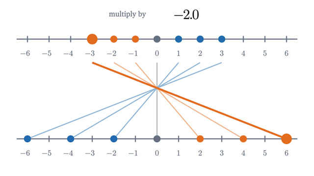
-
GeometryProofs you can see: triangles, circles, similarity, area and volume.
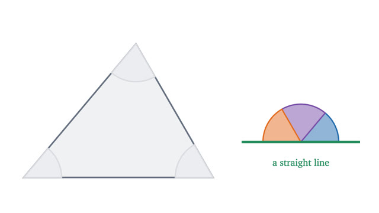
-
TrigonometrySine and cosine as coordinates on a circle, and everything that follows.
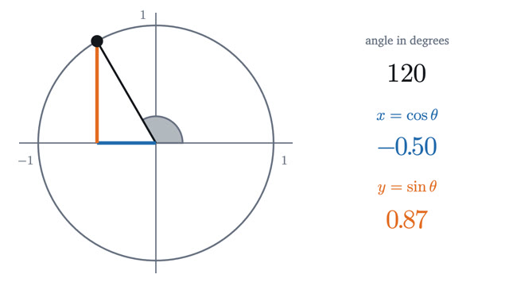
-
PrecalculusFunctions, exponentials, logarithms, complex numbers and series.

-
CalculusRates and accumulation, built from pictures before formulas.

-
Linear AlgebraVectors, matrices as motions of space, determinants and eigenvectors.

-
Multivariable CalculusSurfaces, gradients, multiple integrals and vector fields.
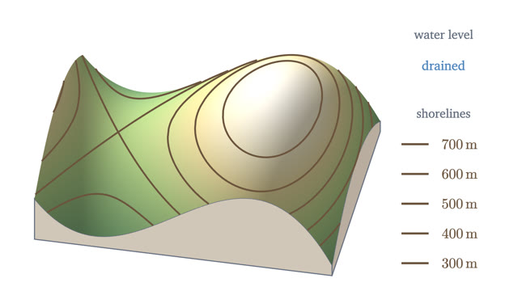
-
ProbabilityCounting outcomes, updating beliefs, and why coincidences are common.
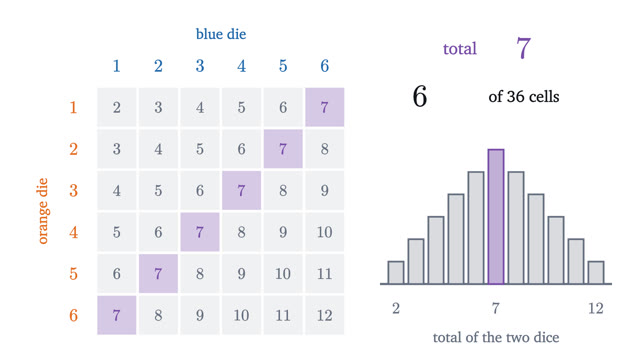
-
StatisticsWhat a sample can and cannot tell you about the world.

-
Discrete MathematicsCounting, induction, graphs and the arguments computer science runs on.
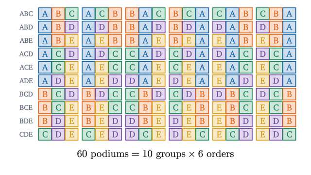
-
Logic and ProofWhat follows from what, and how a proof makes you certain.
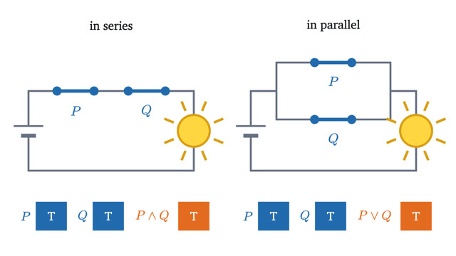
-
PhysicsMotion, force, energy and waves, with the mathematics drawn in.
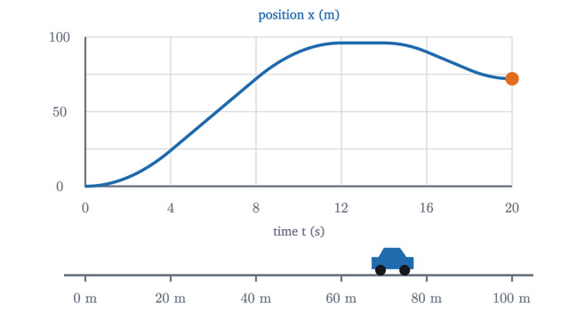
-
EconomicsPrices, margins, trade and strategy, read off the graphs.
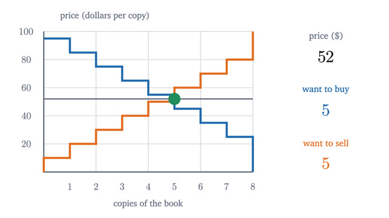
-
Machine LearningHow a model learns: fitting, gradient descent and neural networks.
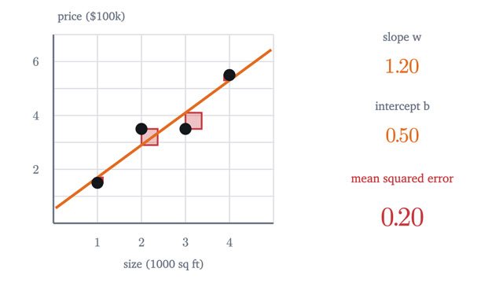
-
AI ProofsProofs found by AI models, worked through from the definitions.
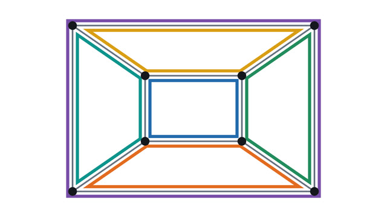